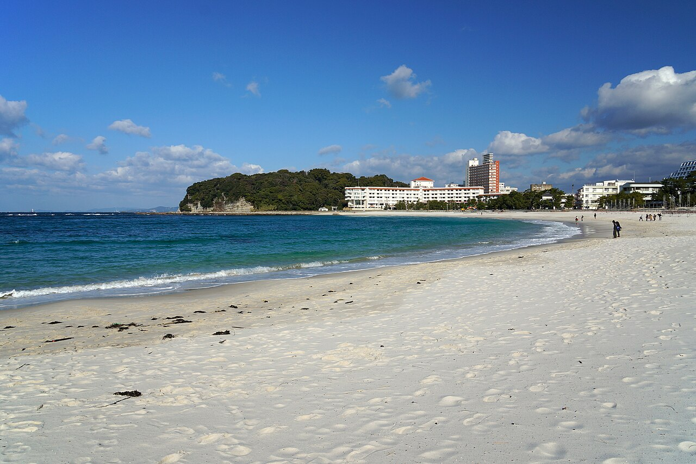

When can you swim at Shirarahama?
The local tourism association announced that Shirarahama's 2026 swimming season ran from 3 May to 13 September. Three other beaches in the town—Rinkaiura, Ezurahama and Tsubaki—had different announced dates (18 July to 31 August). These are historical dates, not a confirmed 2027 schedule.
The opening dates of the beach and the rental kiosk are not the same. Check both if you intend to hire equipment.
2026 official beach opening notice · Latest local tourism notices
2026 rental prices: distinguish the deposit from the fee
The central beach kiosk's published 2026 operating hours were 09:00–17:00, 18 July–13 September, with a separately announced closure on 1 August. The official price list included a refundable ¥500 deposit per item.
| Item | Amount paid | Refund on return | Net cost after refund |
|---|---|---|---|
| Parasols / beach chairs | ¥2,000 | ¥500 | ¥1,500 |
| Swim ring | ¥1,500 | ¥500 | ¥1,000 |
| Child's lifejacket | ¥1,000 | ¥500 | ¥500 |
Parasols were supplied for customers to set up themselves. Do not assume a 2027 price, service availability or refund policy from this table. Check the latest kiosk notice.
Original 2026 rental price list
Where to check facilities and swimming conditions
Shirahama Town launched the browser-based SHIRARAHAMAP in August 2026. It provides current swimming information and beach facility details. Use it to check local arrangements rather than relying on old maps or assuming the beach is open on a particular day.
Official information about SHIRARAHAMAP
Follow local swimming flags, lifeguard instructions and any closure notices. Strong winds, rough seas or other conditions may affect swimming and rentals. Do not enter closed or restricted areas.
Shirahama Town's water safety guidance
Make it a beach-and-onsen day
Arrive with time to check conditions, enjoy the seaside at a comfortable pace, and finish with a local hot spring or meal. If swimming is unavailable, consider a coastal stroll or a public bath instead. Check the opening hours and rules for each bath.
Our day-use onsen comparison and two-day itinerary without a car can help you plan the rest of your stay.
Sources and updates
This independent guide is based on publicly available official and operator information, not a first-hand inspection. Confirm the latest dates, prices and service conditions before travel.